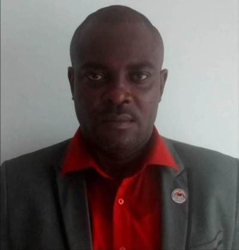
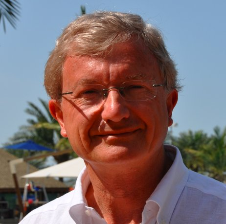

NOM: MAGNET
PRENOMS: CLOVIS BERANGER
TEL: +241 066 32 89 91 / Email: clovsj@gmail.com
ADRESSE: BP 1150 LBV - GABON
QUARTIER : NZENG-AYONG / LIBREVILLE.

- INPTIC: CERTIFICAT DE FORMATION CONTINUE EN PRISE DE VUE ET MONTAGE AUDIOVISUEL. 2018.
- DIPLOME DE JOURNALISTE SCIENTIFIQUE DECERNE PAR WORLD FEDERATION OF SCIENCES JOURNALISTS (WFSJ) ET SCIENCE AND
DEVELOPPEMENT NETWORK. NIVEAU DUT. 2010.
1) AGENCE GABONAISE DE PRESSE (AGP)/GABON MATIN:
- ROLE: DOCUMENTALISTE PRINCIPAL
- FONCTION OCCUPEE: CHEF DE SERVICE DOCUMENTATION
- PERIODE D'EXERCICE: NOVEMBRE 2007 A DECEMBRE 2018.
2) EXPONENTIELLE.COM (AGENCE DE PUBLICITE):
- ROLE: COPYWRITER ET DELEGUE MARKETING
- PERIODE D'EXERCICE: MARS 2006 A JUIN 2007.
Clovis Béranger MAGNET
Né le 02 Février 1978 à Libreville.
Documentaliste d'Entreprise reconverti en Opérateur de Prise de Vue (OPV) et Montage Audiovisuel.
Ancien Chef de Service Documentation de l'Agence Gabonaise de Presse (AGP)/GABON MATIN.
Spécialiste de la Gesstion d'Espace Documentaire/Records Management/Veille Informative et Stratégique/Systèmes
d'Information/Indexation-Codification/Analyse et Recherche Documentaire/Communication et Relation Presse.
Je suis passionné par le Web et les Nouvelles Technologies. Actuellement Elève à l'Ecole 241, une structure de
l'ONG Ogooué Labs, je souhaite à terme devenir DEVELOPPEUR WEB et APPLICATION MOBILE.
RIGOUREUX - METICULEUX - SENS DE L'ORGANISATION - TRAVAIL D'EQUIPE - FAST LEARNER.
Vangelis: Conquest of Paradise. Ma chanson préférée.
Photo de mon héros: M. Christian GODEFROY.
